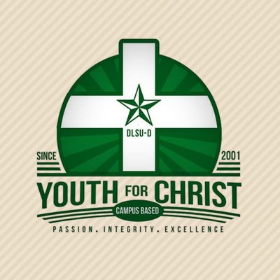
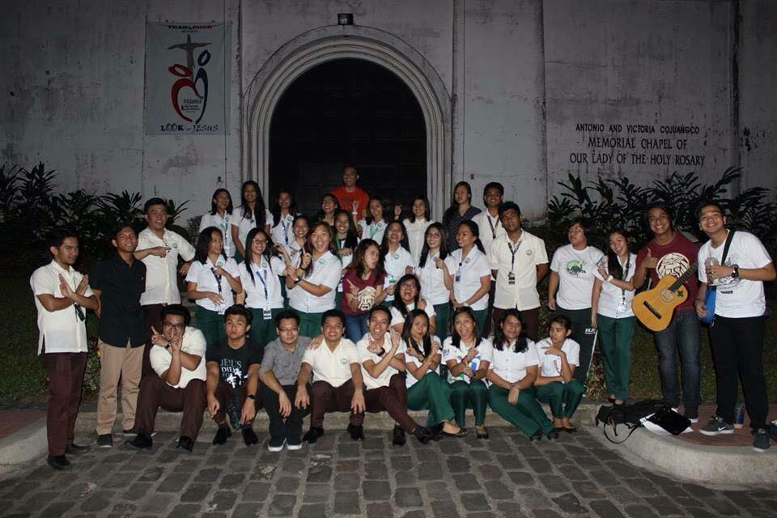
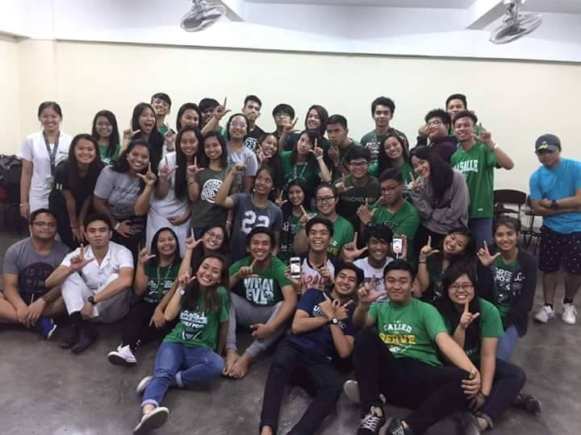
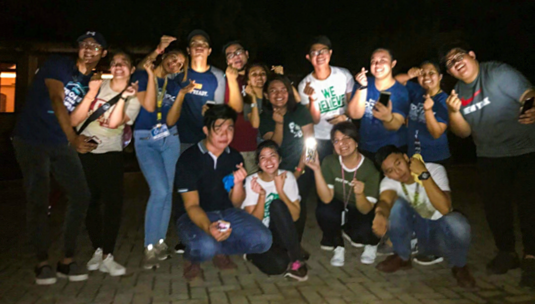
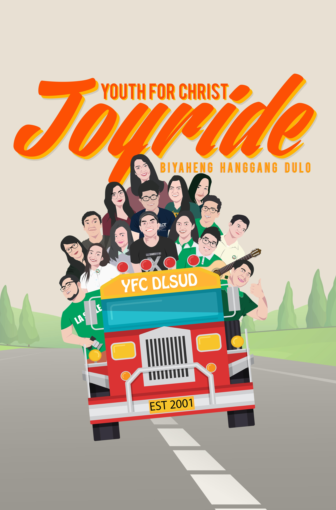

Youth For Christ is an organization under CFC-Couples For Christ. It is a community that creates an
environment to help every young adult in their journey to become closer with Christ. It is a
community where youth are evangelizing fellow youth to spread the love and word of God. "Young people being and bringing
Christ wherever they are."

Youth For Christ DLSUD was established year 2001 by former students of the campus. To gain new members, they are hosting events and inviting
every students of DLSUD. Up until now, the organization is still active and one of the recognized organization of the campus. This A.Y. 2017
-2018, I am elected as the Vice President for Evangelization. meaning, I am in charge of the person inside the family. I am the one who
will recruit new members and at the same time, sustain the existing members for them to continue our journey with Christ.
 
This is the YFC DLSUD family. these photos were taken on A.Y 2016-2017, these are during some events of the organizations.
Being here in the organization is fun. You can get new friends and at the same time, you have the time to build a stronger
connection to God. Many ates and kuyas will have time for you anytime especially when you need someone to talk to. In this
family, you will never feel alone because of these awesome people.

This is the YFC DLSUD A.Y. 2017-2018 Executive Board, my household, the second family I got beside from my biological family. This
is our first complete picture, taken during our second event this semester. If you have the chance to see us together, you will also feel
the bond and love we built on each other. We have already passed through lots of pains, struggles, and tears together. But still,
we chose to continue the journey we had started.

This is our household, our motto for this term is "Hanggang Dulo". meaning there should be no one left behind in our journey.
We should stick to one another Hanggang Dulo. I am proud to say that we are all doing this for God.
Go back to HomePage